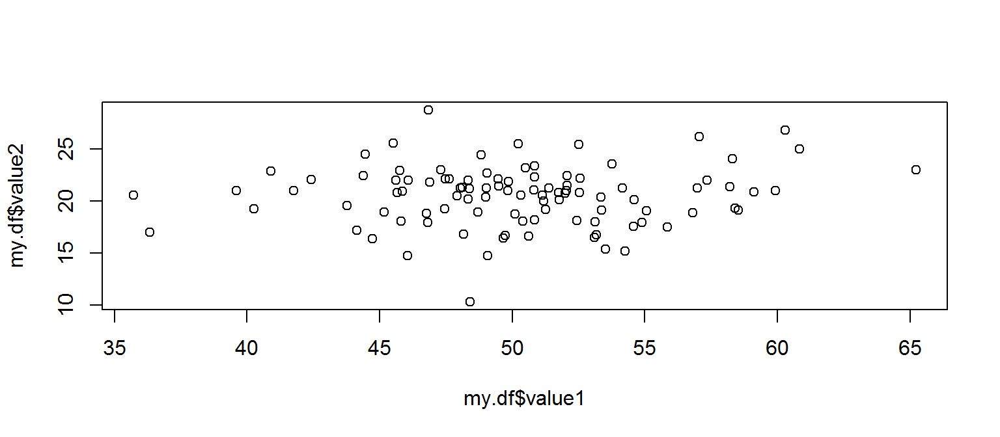
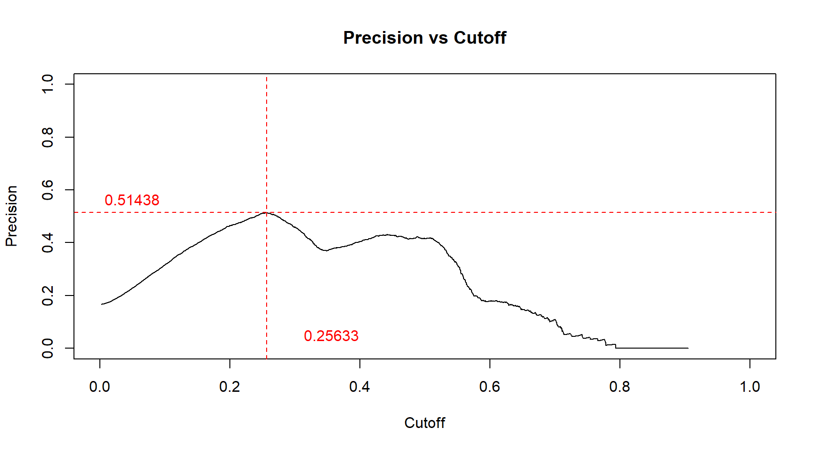
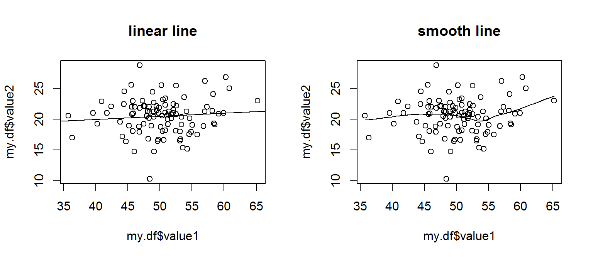
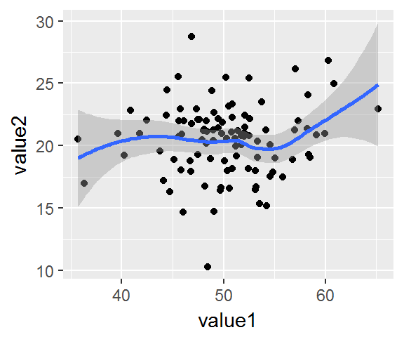
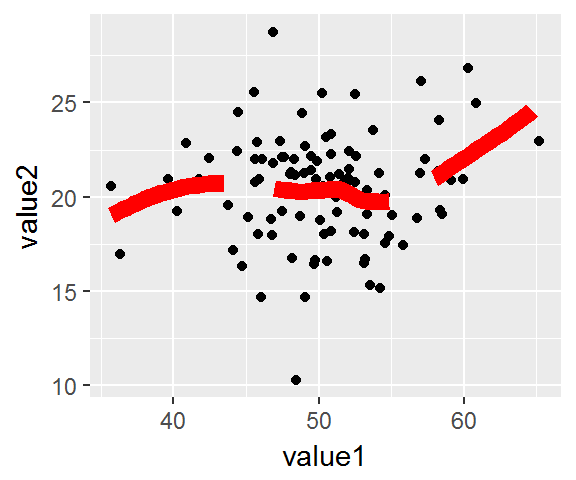
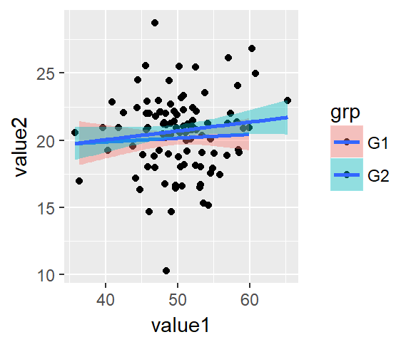

7.4 Scatter Plot
7.4.1 Two Dimension Data
- Use scatter plot to represent correlation between two numeric variables
- x = number, y = number
7.4.1.1 Base Graphic
plot (my.df$value1, my.df$value2)
7.4.1.2 ggplot2
- qplot default to geom_point when two numerical value is supplied for x and y
qplot (data = my.df, x = value1, y = value2)
qplot (data = my.df, x = value1, y = value2, geom='point')
ggplot(data = my.df, aes(x=value1, y=value2)) + geom_point()


7.4.2 Two + One Dimension Data
7.4.2.1 Base Graphic
- Base-R uses col parameter to represent third dimension
- col accept vector of number, color name or factor
- Use factor to automatically assign colors (ensure it is factor type, otherwise, R will complain invalid color name)
par(mfrow=c(1,2))
plot (my.df$value1, my.df$value2, col=c('green','blue','red'))
plot (my.df$value1, my.df$value2, col=as.factor(my.df$grp))
# plot (my.df$value1, my.df$value2, col=my.df$grp) ... error due to not recognized color name
par(mfrow=c(1,1))
7.4.2.2 ggplot2
- In qplot/ggplot, the third dimension of data can be represented by assigning color parameter to the third variable
- Note that fill has not effect on scatter plot. fill should only be used for bar like chart eg. geom_hist or gem_bar
qplot (data = my.df, x = value1, y = value2, color = grp, geom='point')
ggplot(data = my.df, aes(x=value1, y=value2, color = grp)) + geom_point()
ggplot(data = my.df, aes(x=value1, y=value2, fill = grp)) + geom_point()


7.4.3 Overlay Smooth Line
7.4.3.1 Base Graphic
- Base graphic allow abline to superimpose additional line into current plot
- For add on linear line, use abline with lm object
- scatter.smooth make it easy to impose a loess smoothing line
par(mfrow=c(1,2))
plot (my.df$value1, my.df$value2, main='linear line')
abline(lm(my.df$value2~my.df$value1))
scatter.smooth(my.df$value1, my.df$value2, main='smooth line')
7.4.3.2 ggplot2
- Smooth line is possible for scatter plot, as it require X and Y numeric variables
- Smooth line can be added with either linear or loess method
- With overlapping third dimension variable (color), smoothline is also overlapped, hence not a good idea
- default confidence interval is level=0.95, specify 0 to hide the interval
ggplot(data = my.df, aes(x=value1, y=value2)) + geom_point() +
geom_smooth() # default method='loess'
ggplot(data = my.df, aes(x=value1, y=value2)) + geom_point() +
geom_smooth(level=0) # hide interval with level=0
ggplot(data = my.df, aes(x=value1, y=value2, fill = grp)) + geom_point() +
geom_smooth(method='lm', level=0.75)